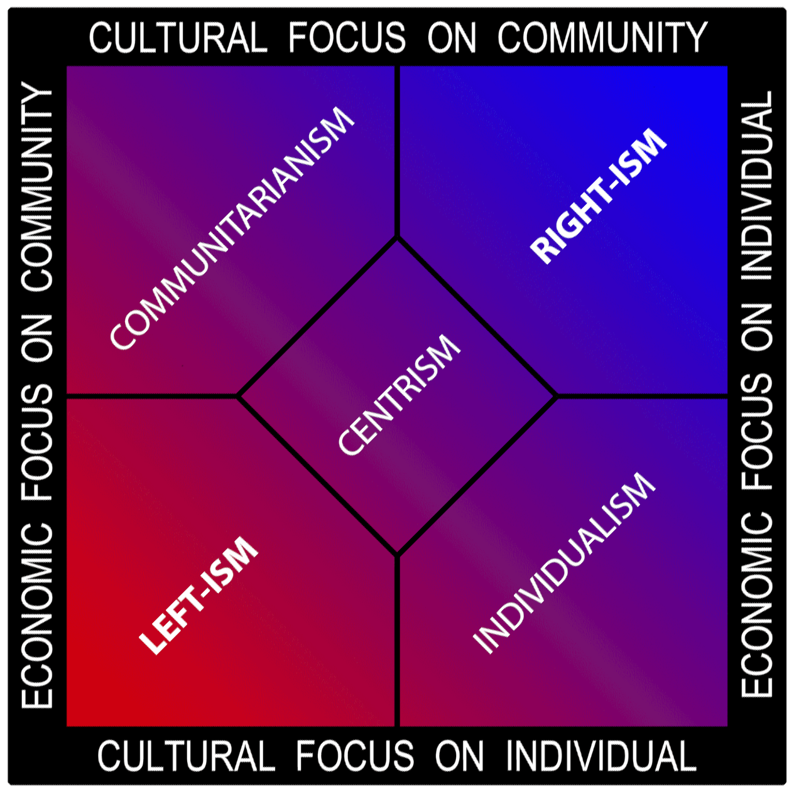

You get out of your way and finally decide to have a political debate. A complete layman, but still giving it a shot. But wait. This intellectual looking dude in the group can't go a second without flaunting his pretentious vocabulary. The rest of the group decides to match up to him to stop looking like rookies. Out of a sudden, they all turn into a bunch of John Lockes debating 'contemporary right-wing extremism and collectivism'. And you're standing there, a complete noob who probably has no idea what that even means. Heck, you probably have no idea who John Locke even is.
But don't worry, noob. We love noobs, so we're going to help you understand all the basic jargon that your chi-chi friends often use to sugar-coat their below-average political arguments. Don't worry, it won't take long.
Economic Beliefs: Left vs. Right
The whole deal about 'Leftism' and 'Rightism' is all about the beliefs on how the economy should be, and how much control the government should have over it.
Left
When someone tends towards the 'left' and attributes to being a 'leftist', all they mean is that they prefer having stricter government control over how the economy should be. Leftists praise socialism, the economic ideology that suggests that a significant amount of property must be publicly owned rather than private. Radical (or extreme) leftists adopt a much stricter form of a socialist ideology called communism. The fundamental idea of left-wing politics is social equality, in opposition to social hierarchy.
In short, leftism is all about 'You're equal. I'm equal. We all are equal', and has economic ideologies with respect to this.
In short, leftism is all about 'You're equal. I'm equal. We all are equal', and has economic ideologies with respect to this.
Right
The right favors the free market, as simple as that. Rightists and right-wing policies push for minimal government control over the economy. The free market is the ruler in the right. Rightists believe that certain economic hierarchies are inevitable, but all the same lead to societal welfare in the end. The argument for lesser government regulation that right-wingers often make is that it promotes innovation, and uses demand and supply as the price-setter as opposed to the government having a monopoly over the price.
Rightists and right-wing policies push for minimal government control over the economy.
Social Beliefs: Collectivism vs. Individualism
While left and right are often used to express economic beliefs, collectivism and individualism are used to express one's orientation regarding cultural issues such as same-sex marriage, abortion, immigration, and gender equality.
Collectivism
Collectivism is the idea that the collective (the group) comes before the individual. The main objective of the individual in a collectivist society is to serve the group one belongs to, and to uphold the group's values and beliefs. The value of the individual, therefore, entirely depends on how he serves his society. Collectivism considers collective good to be more important than individualistic well being.
The major driver behind collectivism is the assumption that when the group is well off, so is the individual.
Cultural perspectives heavily depend on the collective's ideas and traditional beliefs. If it is traditionally held that 'same-sex marriage is unacceptable' by the collective in a collectivist society, all individuals are expected to adhere to such a belief regardless of their sexual orientation. Collectivist societies often tend to sustain traditional norms and expect individuals to cohere to these norms.
The Eastern world (countries like India and China, for example) tend to have a popular culture that leans towards a collectivist ideology.
Collectivist societies often tend to sustain traditional norms and expect individuals to cohere to these norms.
Individualism
Individualism is the outlook that aims to liberate the individual and has beliefs that value the individual more than the collective. It is a social stance that focuses on securing more fundamental rights for individuals and making sure that different belief systems and social orientations are respected.
The major driver behind individualism is the assumption that when individuals are autonomous beings and are well off, the group that they belong to is better off too. A society’s socio-cultural health entirely depends on the well being of individuals—not the other way round.
Individualistic societies tend to be tolerant of a varying set of beliefs held by people of different social identities. For example, LGBTQ freedom, abortion rights, and gender equality are some of the cultural issues that are highly respected by individualists.
Western nations like the US and Canada tend to have more individualistic societies when compared to Eastern countries.
Individualistic societies tend to be tolerant of a varying set of beliefs held by people of different social identities.
The General Spectrum: Liberals vs. Conservatives
Though the spectrum mentioned above is independently specific to economic and social policies; in the US and in many parts of the world, liberals and conservatives are often used to generalize socio-economic beliefs.
Liberals
Liberals, who occupy the left in the general spectrum, regard the capitalistic free market to be the best option, but believe that the model is flawed and hence hold that the government should have more control over the economy. As a result, liberals favor taxation and the heavy redistribution of wealth. Socio-culturally, liberals believe that it is the duty of the government to be more inclusive, such as being open to immigration and increasing minority representation. They also tend to be highly individualistic when it comes to issues like abortion (pro-choice), and are generally more open to social changes.
Liberals favor taxation and the heavy redistribution of wealth. Socio-culturally, liberals believe that it is the duty of the government to be more inclusive, such as being open to immigration and increasing minority representation.
Conservatives
Those who occupy the right side of this general spectrum are known as "conservatives"—people who believe in lesser control over the economy and hold that government should have a lesser of a role to play in people's lives. Socio-culturally, conservatives believe in sustaining and protecting traditional practices, and are often skeptical of social change. They also tend to have an against stance on issues like abortion (pro-life), and other new social ideas such as the legalization of marijuana.

Conservatives believe in lesser control over the economy and hold that government should have a lesser of a role to play in people's lives. Socio-culturally, conservatives believe in sustaining and protecting traditional practices, and are often skeptical of social change.
Where Indian Political Parties Stand
We’ll be honest. This one’s a hard one. While some of them are obvious—like the Communist Party of India being a left-wing party—some of them are pretty difficult to generalize. Unlike the US, where the two main parties (Democratic Party—the liberals and GOP—the conservatives) have firmly established their economic beliefs, the two main Indian parties (Congress and BJP) haven’t been vocal about any specific leanings.
However, we can make a distinction on socio-cultural grounds. The BJP can be deemed as right wing in the general spectrum since it heavily banks on the nationalistic and Hindutva rhetoric. On the other hand, Congress can be deemed as a ‘centrist’ party because it generally does not focus much on the Hindutva element when compared to the BJP.
Bottomline
While the general spectrum is popularly used to align with a certain position, there are various cases where it may not apply. For example, an economically conservative person can be open to modern individualistic stances such as the legalization of marijuana, so he/she cannot be termed as a conventional conservative, leading us to create another branch of the spectrum known as libertarianism. This can go on and on, and more branches can be created for different intersections of beliefs. However, popular alignments can easily be generalized with this basic spectrum which comprises of the left-wing liberals and right-wing conservatives.